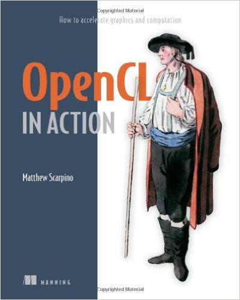

Clojure is not afraid of the GPU
Dragan Djuric
dragandj@gmail.comDragan Djuric
- new! blog https://dragan.rocks
- new twitter @draganrocks
- Professor of Software Engineering
- University of Belgrade
- Clojure as a primary language since 2009
- Teach Clojure since 2010
- dragandj@gmail.com
- github: blueberry / uncomplicate
- https://uncomplicate.org
My Hammock

Four Horsemen of the Apocalypse
- lisp
- Emacs
- native libraries
- Graphical Processing Units
Clojure is great!
- Dynamic and fast
- First-class functions
- Great abstractions and data structures
- Many useful libraries
- Even more experimental libraries
- Access to Java and the JVM
- Hey, the community is amazing!
Good at number crunching?
- Good? maybe.
- Great? NO!
- JVM - no access to hardware-specific optimizations
- We can make it great!
CPU is not so great either!
- R, Python? Even worse than Java.
- C? complicated, verbose platform-specific optimizations.
- CPU? too beefed-up. Burns as the Sun!
GPU has a lot to offer …at a price
- many dumb computing units
- but, power-efficient for number crunching
- hardware support for massive parallelism
- faster and cheaper each year
- notoriously difficult to program
Uncomplicate
- Fluokitten
- monadic and other fluorescent fuzzy little things
- ClojureCL
- take control of the GPU, CPU, and accelerators from Clojure
- Neanderthal
- vectors and matrices, but optimized for CPU and GPU
- Bayadera
- high performance Bayesian statistics and data analysis on the GPU
Hello world: dot product
\begin{gather*}
\vec{x} = [x_1, x_2,\ldots, x_n]\\
\vec{y} = [y_1, y_2,\ldots, y_n]\\
\vec{x} \cdot \vec{y} = \sum_{i=1}^n x_i y_i
\end{gather*}
- \(O(n)\): linear, one loop
- \(2n\) FLOPS, \(2n\) reads
Idiomatic Clojure
(let [dot-product (fn [xs ys] (reduce + (map * xs ys))) x-vec (vec (range 100000)) y-vec (vec (range 100000))] (dot-product x-vec y-vec))
333328333350000
Execution time: 14 ms
loop/recur
(let [dot-product (fn [xs ys] (loop [res 0.0 x (first xs) xs (next xs) y (first ys) ys (next ys)] (if (and x y) (recur (+ res (* (double x) (double y))) (first xs) (next xs) (first ys) (next ys)) res))) x (vec (range 100000)) y (vec (range 100000))] (dot-product x y))
3.3332833335E14
Execution time: 2 ms
Intermezzo: Fluokitten
- "Monadic" functions in Clojure
- preserve the type of arguments
fold(a more versatile reduction)fmapfoldmap: map/reduce- …and much more…
(use 'uncomplicate.fluokitten.core)
(let [x-vec (vec (range 100000)) y-vec (vec (range 100000))] (foldmap + 0.0 * x-vec y-vec))
3.3332833335E14
Execution time: 4 ms (2.5 ms with primitive fn)
Primitive Java arrays
(let [dot-product (fn ^double [^doubles xs ^doubles ys] (let [n (alength xs)] (loop [i 0 res 0.0] (if (< i n) (recur (inc i) (+ res (* (aget xs i) (aget ys i)))) res)))) x-arr (double-array (range 100000)) y-arr (double-array (range 100000))] (dot-product x-arr y-arr))
3.3332833335E14
Execution time: 76 μs
Neanderthal: using optimized library
(use '(uncomplicate.neanderthal core native))
(let [x (dv (range 100000)) y (copy x)] (dot x y))
3.3332833335E14
- Execution time (single thread!): 32 μs
- what a disappointment :(
- patience, please…
Neanderthal: a taste of GPU
(use 'uncomplicate.clojurecl.core) (use 'uncomplicate.neanderthal.opencl) (use 'uncomplicate.commons.core)
(with-default (with-default-engine (with-release [gpu-x (clv (range 100000)) gpu-y (copy gpu-x)] (dot gpu-x gpu-y))))
3.33328318201856E14
- Execution time: 327 μs
- Something is surely not right here!
Sending a fleet to catch a few shrimps
- parallelization suitability
- map :)
- reduce :(
- fixed GPU calling costs (dozen(s) μs)
- programming complexity!
Hello (a slightly larger) world
\begin{gather*}
C_{m\times n} = A_{m\times r}\, B_{r\times n}\\
c_{ij} = \sum_{k=1}^r a_{ik} b_{kj}\,.\\
c_{ij} = \vec{a_i}\cdot \vec{b_j}\,!
\end{gather*}
- \(O(mnr)\) (qubic, triple nested loop)
- \(2mnr\) FLOPS, complex read/write patterns
Idiomatic(?) Clojure
Adapted from Rosetta Code (realize seqs with doall).
(let [transpose (fn [s] (doall (apply map vector s))) nested-for (fn [f x y] (doall (map (fn [a] (doall (map (fn [b] (f a b)) y))) x))) matrix-mult (fn [a b] (nested-for (fn [x y] (reduce + (map * x y))) a (transpose b))) ma-vec (vec (take 64 (cycle [(take 64 (cycle [1 2 3 4]))]))) mb-vec (vec (take 64 (cycle [(take 64 (cycle [4 3 2 1]))])))] (matrix-mult ma-vec mb-vec))
Execution time (a small matrix!): 40 ms
Neanderthal to the rescue
(let [a (sge 64 64 (take (* 64 64) (cycle [1 2 3]))) b (copy a)] (mm a b))
Quick comparison
| \(n\times{}n\) | Neanderthal | Optimized Java | \(\times\) |
|---|---|---|---|
| 2 \(\times\) 2 | 118 ns | 57 ns | 0.49 |
| 4 \(\times\) 4 | 143 ns | 132 ns | 0.93 |
| 16 \(\times\) 16 | 1.1 μs | 3.8 μs | 3.44 |
| 64 \(\times\) 64 | 47 μs | 211 μs | 4.46 |
| 128 \(\times\) 128 | 191 μs | 1.6 ms | 8.14 |
| 256 \(\times\) 256 | 639 μs | 12 ms | 18.85 |
| 1024 \(\times\) 1024 | 38 ms | 751 ms | 19.77 |
| 2048 \(\times\) 2048 | 288 ms | 6 sec | 20.91 |
| 8192 \(\times\) 8192 | 18 sec | 6 min | 20.62 |
Huge matrices
(with-default (with-default-engine (with-release [cpu-a (sge 8192 8192 (take (* 64 64) (cycle [1 2 3]))) cpu-b (copy cpu-a) cpu-c (zero cpu-a) gpu-a (transfer! cpu-a (clge 8192 8192)) gpu-b (transfer! cpu-b (clge 8192 8192)) gpu-c (zero gpu-a)] ;;(mm! cpu-a cpu-b cpu-c) ;;18 seconds! (mm! gpu-a gpu-b gpu-c) ;;GPU calls are asynchronous, measure with finish! #_(finish!) ))
Execution time (8192× 8192):
- Neanderthal CPU (i7-4790k): 17885 ms
- Neanderthal GPU (AMD Radeon R9 290X): 293 ms
- 60× faster than native CPU
- 1200× faster than optimized Java
- vs "idiomatic" Clojure?…many orders of magnitude
… and much more reusable stuff
- subvectors
- submatrices
- columns/rows of (sub)matrices
- subvectors of columns/rows of (sub)matrices
- strides
- edge cases
- don't forget memory size!
- …
So What?
- Is that it? A bunch of math-y operations?
- Do I need those?
- often you do, even if you do not see it at first :)
- get standard operations for free
- But I also need to implement unique algorithm X…
- THAT is the point of all this!
- ClojureCL to the rescue
Hello Raw GPU

Regular Hello World ~ 170 lines of code!
ClojureCL to the rescue
- OpenCL & ClojureCL
- main concepts
- platforms, devices, contexts, queues, programs
- kernels
- buffers
- memory: global, local, and private
- enqueuing kernels
- parallel mapping - easy!
- (parallel) reduction - (not so) hard!
- Learning: examples from the book - in Clojure!
- example: dot product in ClojureCL
Mapping: a kernel for \(x_i y_i\)
__kernel void multiply (__global float* acc, __global float* x, __global float* y) { uint id = get_global_id(0); acc[id] = x[id] * y[id]; }
Fire it off - this is the whole program!
(with-release [dev (first (sort-by-cl-version (devices (first (platforms))))) ctx (context [dev]) cqueue (command-queue ctx dev)] (let [cnt 5 size (* 4 cnt) work-sizes (work-size [cnt]) result (float-array cnt) program-source (slurp (clojure.java.io/file "multiply.cl"))] (with-release [cl-x (cl-buffer ctx size :read-only) cl-y (cl-buffer ctx size :read-only) cl-acc (cl-buffer ctx size :read-write) prog (build-program! (program-with-source ctx [program-source])) multiply-kernel (kernel prog "multiply")] (enq-write! cqueue cl-x (float-array [1 2 3 4 5])) (enq-write! cqueue cl-y (float-array [0.5 1.5 2.5 3.5 4.5])) (set-args! multiply-kernel cl-acc cl-x cl-y) (enq-nd! cqueue multiply-kernel work-sizes) (enq-read! cqueue cl-acc result) (seq result))))
| 0.5 | 3.0 | 7.5 | 14.0 | 22.5 |
Reducing: a kernel for \(\sum_{i=1}^n\)
__kernel void sum_reduction (__global float* acc) { const float sum = work_group_reduction_sum(acc[get_global_id(0)]); if (get_local_id(0) == 0) { acc[get_group_id(0)] = sum; } } __kernel void multiply_reduce (__global float* acc, __global float* x, __global float* y) { uint id = get_global_id(0); float sum = work_group_reduction_sum(x[id] * y[id]); if (get_local_id(0) == 0) { acc[get_group_id(0)] = sum; } }
Enqueuing reduction
(use 'uncomplicate.clojurecl.toolbox)
(with-default (let [cnt 5 size (* 4 cnt) work-sizes (work-size [cnt]) program-sources [(slurp (clojure.java.io/resource "uncomplicate/clojurecl/kernels/reduction.cl")) (slurp (clojure.java.io/file "dot_reduce.cl"))]] (with-release [cl-x (cl-buffer *context* size :read-only) cl-y (cl-buffer *context* size :read-only) cl-acc (cl-buffer *context* size :read-write) prog (build-program! (program-with-source *context* program-sources) "-cl-std=CL2.0 -DREAL=float -DACCUMULATOR=float" nil) multiply-kernel (kernel prog "multiply_reduce") sum-reduction-kernel (kernel prog "sum_reduction")] (enq-write! *command-queue* cl-x (float-array [1 2 3 4 5])) (enq-write! *command-queue* cl-y (float-array [0.5 1.5 2.5 3.5 4.5])) (set-args! multiply-kernel cl-acc cl-x cl-y) (set-args! sum-reduction-kernel cl-acc) (enq-reduce *command-queue* multiply-kernel sum-reduction-kernel cnt 256) (enq-read-float *command-queue* cl-acc))))
47.5
Bayadera
- a Clojure library
- highly opinionated - Bayesian
- probabilistic
- need to NOT be super slow - thus GPU
- actually is the fastest I have seen
- use cases:
- Bayesian data analysis (more stats-oriented)
- a foundation for machine learning algorithms
- lots of statistical number crunching
- risk assessment, decision analysis, etc.
The Goal
- programmers are the first-class citizens
- NOT a "me too, just in clojure"
- different and better (for what I want to do)
Bayes rule
Going backwards, from results to possible causes!
\begin{equation*}
\Pr(H|D) = \frac{\Pr(D|H)\times \Pr(H)}{\Pr(D)}
\end{equation*}
…
\begin{equation*}
posterior = \frac{likelihood\times prior}{evidence}
\end{equation*}
Looks simple and easy!
HARD to compute
Usually:
\begin{equation*}
\Pr(\vec{h}|\vec{d}) = \frac{\prod_i f(\vec{d_i},\vec{h})\times g(\vec{h})}{\idotsint \prod_i f(\vec{d_i},\vec{h})\,d \vec{h}}
\end{equation*}
computationally:
\begin{equation*}
answer = \frac{hard\times acceptable}{impossible}
\end{equation*}
Markov Chain Monte Carlo (MCMC)
- a family of simulation algorithms
- draws samples from unknown probability distributions
- (enough) samples approximate the distribution
\begin{equation*}
\Pr(\vec{h}|\vec{d}) \propto \exp \left(\sum_i \log f(\vec{d_i},\vec{h}) + \log g(\vec{h})\right)
\end{equation*}
computationally:
\begin{equation*}
answer \propto zillions \times (hard\times acceptable)
\end{equation*}
Log likelihood
REAL rlr_loglik(__constant const REAL* params, REAL* x) { const REAL nu = x[0]; const REAL b0 = x[1]; const REAL b1 = x[2]; const REAL sigma = x[3]; const uint n = (uint)params[0]; const bool valid = (0.0f < nu) && (0.0f < sigma); if (valid) { const REAL scale = t_log_scale(nu, sigma); REAL res = 0.0; for (uint i = 0; i < n; i = i+2) { res += t_log_unscaled(nu, b0 + b1 * params[i+1], sigma, params[i+2]) + scale; } return res; } return NAN; }
Log prior
REAL rlr_mcmc_logpdf(__constant const REAL* params, REAL* x) { const bool valid = (1.0f < x[0]); if (valid) { return exponential_log_unscaled(params[0], x[0] - 1) + gaussian_log_unscaled(params[1], params[2], x[1]) + gaussian_log_unscaled(params[3], params[4], x[2]) + uniform_log(params[5], params[6], x[3]); } return NAN; }
Calling it from Clojure
(def rlr-prior (cl-distribution-model [(:gaussian source-library) (:uniform source-library) (:exponential source-library) (:t source-library) (slurp (io/resource "uncomplicate/bayadera/examples/dbda/ch17/robust-linear-regression.h"))] :name "rlr" :mcmc-logpdf "rlr_mcmc_logpdf" :params-size 7 :dimension 4)) (defn rlr-likelihood [n] (cl-likelihood-model (slurp (io/resource "uncomplicate/bayadera/examples/dbda/ch17/robust-linear-regression.h")) :name "rlr" :params-size n)) (defn analysis [] (with-default-bayadera (with-release [prior (distribution rlr-prior) prior-dist (prior (sv 10 -100 100 5 10 0.001 1000)) post (posterior "rlr_300" (rlr-likelihood (dim params-300)) prior-dist) post-dist (post-300 params-300) post-sampler (sampler post-300-dist {:limits (sge 2 4 [1 10 -400 100 0 20 0.01 100])})] (mix! post-sampler {:step 384}) (histogram! post-sampler 1000))))
How fast is it?
MCMC is sequential by nature - it is very difficult to transfer to GPU
- Bayadera
- 61,208,576 samples in 267 ms.
- 4.36 ns per sample
- each computing statistical function 306 times.
- very precise histogram
- JAGS/Stan (state-of-the-art bayesian C++ tools)
- 20,000 samples in 180/485 seconds
- 9 ms per sample
- rough histogram
- 2,000,000 × faster per sample
- more precise results, 1000 × faster
Clojure (only \(likelihood \times prior\))
(defn log-likelihood [params x] (let [nu (entry x 0) b0 (entry x 1) b1 (entry x 2) sigma (entry x 3) n (dim params)] (if (and (< 0.0 nu) (< 0.0 sigma)) (let [scale (t-log-scale nu sigma)] (loop [i 0 res 0.0] (if (< i n) (recur (+ i 2) (+ res scale (t-log-unscaled nu (+ b0 (* b1 (entry params i))) sigma (entry params (inc i))))) res))) Double/NaN))) (defn log-prior [params x] (if (< 1.0 (entry x 0)) (+ (exponential-log-pdf (entry params 0) (dec (entry x 0))) (gaussian-log-pdf (entry params 1) (entry params 2) (entry x 1)) (gaussian-log-pdf (entry params 3) (entry params 4) (entry x 2)) (uniform-log-pdf (entry params 5) (entry params 6) (entry x 3))) Double/NaN)) (defn posterior-unscaled [params x] (let [n (entry params 0)] (+ (log-likelihood (subvector params 1 n) x) (log-prior (subvector params (inc n) (- (dim params) n 1)) x))))
Unfair comparison - still much faster
Probability density function evaluation
- GPU
- including read/write to memory
- 100,000,000 in 260 ms
- 2.6 ns per element
- JVM
- just naive reevaluation /w same arguments from cache
- 100,000 in 430 ms
- 4.3 μs per element
1650 × faster!
Incanter?
Incanter:
- No bayesian functionality
- Deadly slow
- Trivial example: 100,000,000 samples from gaussian: 27 seconds
Bayadera:
- 4 ms
- 7,000 faster
In real life
- 1 second vs a couple of hours
- 1 minute vs several days!
- 1 hour vs couple months/ a year
Thank You
The presentation can be reached through my blog:
Find more at: